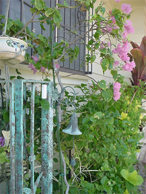

その１： ストーリー作りと練習。
その１： ストーリー作りと練習。
その２： 練習と確認。
その３： 練習、実践。そして自分らしい語りを。
研修ご希望期間（＊短期研修 ＊長期継続）によって研修スケジュールをお知らせします。ご相談くださいませ。

~Illustration by Dr. Norman Kelley~
Beauty: Self Expression
Power: Personal Interaction
Wisdom: Cultural Connection

In this life we cannot do great things.
We can only do small things with great love.
~Mother Teresa~
| © 1995-2013 NACOS International Institute. All Rights Reserved. |